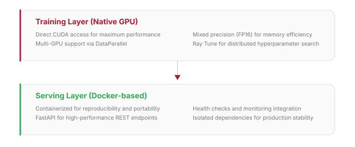
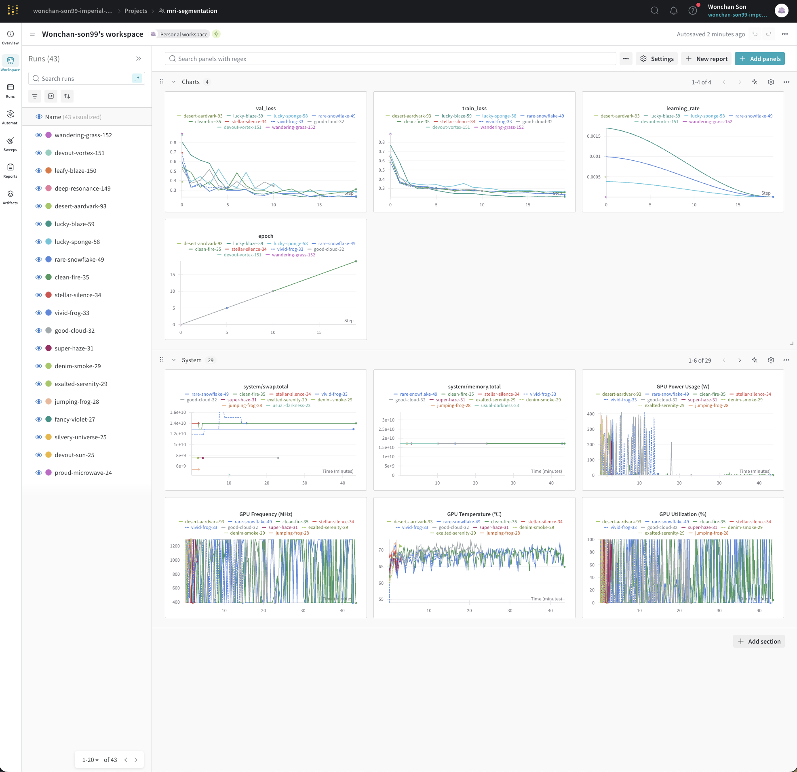
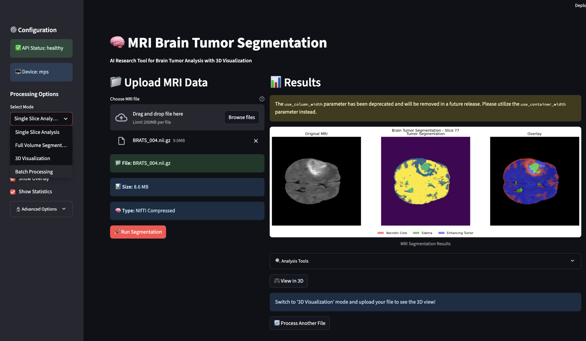

DeepCatch M
Multi-organ MRI Segmentation & MLOps Pipeline

Multi-organ MRI Segmentation & MLOps Pipeline
DeepCatch M is a production-grade MLOps pipeline for MRI segmentation, targeting multi-organ analysis including Subcutaneous Fat and Abdominal Visceral Fat. The project addresses the full ML lifecycle — from data versioning to containerized deployment — with strict reproducibility for clinical applications.
Medical imaging ML requires strict reproducibility, audit trails for compliance, and systematic model comparison. This pipeline template uses a hybrid architecture: native GPU training for performance, containerized serving for portability.



DVC handles Git-like versioning for large medical datasets with deduplication. MLFlow + W&B track metrics, parameters, and artifacts. Ray Tune runs hyperparameter search with ASHA scheduling across multiple GPUs. FastAPI + Docker serves models with caching, health checks, and Grafana monitoring.
Compared multiple SOTA architectures through a unified model factory pattern, enabling systematic architecture search for optimal performance on Subcutaneous Fat and Abdominal Visceral Fat segmentation.
| Architecture | Key Feature | Params |
|---|---|---|
| U-Net | Baseline encoder-decoder with skip connections | ~7.8M |
| U-Net++ | Dense nested skip pathways for better gradient flow | ~9.2M |
| nnU-Net | Residual blocks, instance norm, deep supervision | ~31M |
Multi-class Dice loss with deep supervision for auxiliary losses. Multi-GPU training with DataParallel and mixed precision (FP16). Optimized data loading with caching and prefetching for large MRI volumes.
